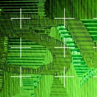

|
all #1 #2 #3 #4 #5 #6 #7 #8 #9 #10 #11 #12 #13 #14 #15 #16 #17 #18 |
+ +
+ +
|  |
|
The data_Flux_project can be seen as a prerecorded video: ..::> full video ..::>multi-track video (needs a fast computer otherwise synchronization will be off) + + + + + |
|
|
about | contact | credits | subscribe |